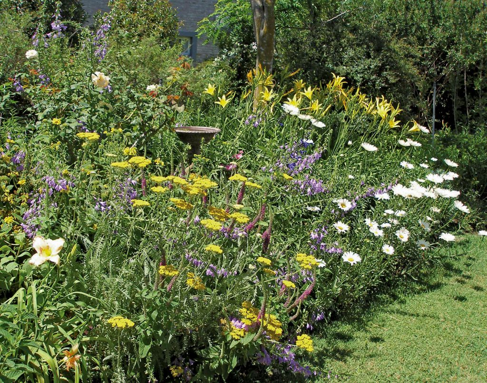
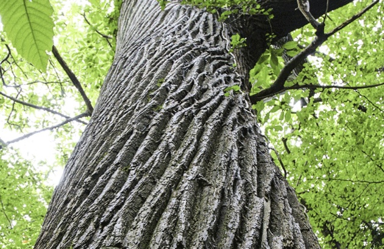
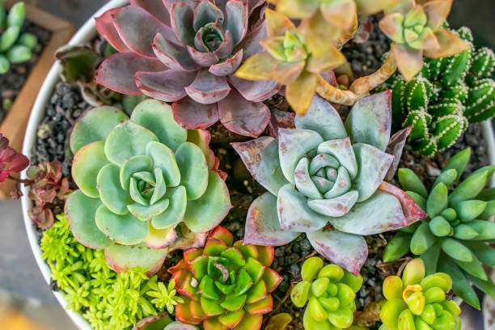

1. Verduras de hoja
Verduras que se caracterizan por sus hojas verdes y tiernas, ricas en vitaminas y minerales. Se consumen crudas en ensaladas o cocidas en diversos platos.
2. Verduras crucíferas
Grupo de verduras que pertenecen a la familia de las Brassicaceae, conocidas por sus propiedades antioxidantes y beneficios para la salud. Incluyen vegetales como el brócoli y la coliflor.
Cocina mediterránea: Estilo culinario que incluye ingredientes como aceite de oliva, verduras frescas, pescados y cereales, típico de países alrededor del mar Mediterráneo.
Cocina asiática: Variedad de tradiciones culinarias de Asia, que incluye platos como sushi, curry y fideos, con un enfoque en sabores intensos y especias.
Ballet: Estilo de danza formal y técnica que incluye movimientos precisos y una fuerte énfasis en la postura.
Danza contemporánea: Combina elementos del ballet y la danza moderna, permitiendo más libertad de expresión y movimientos innovadores.




info@guiaverde.com
comercial@guiaverde.com
comercial@guiaverde.com
Print Only (Hide on screen only)
GuíaVerde es un proyecto impulsado por Floramedia, la agencia de Comunicación y Marketing especializada en el Sector Verde